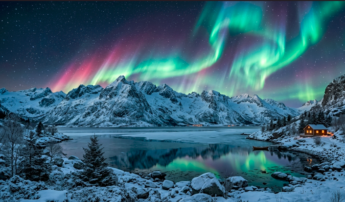
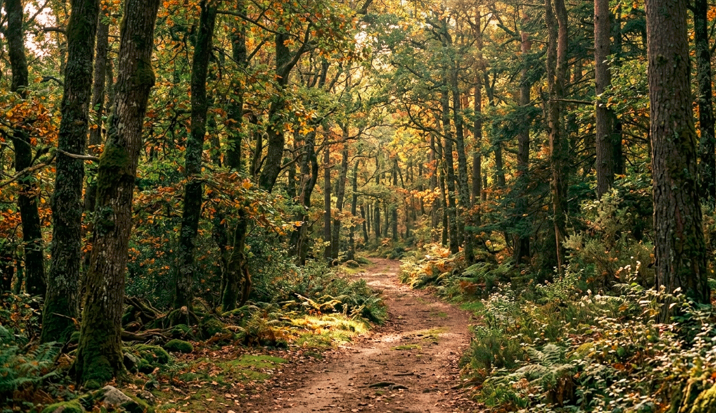
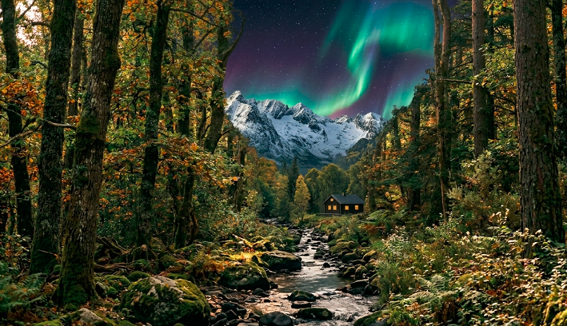
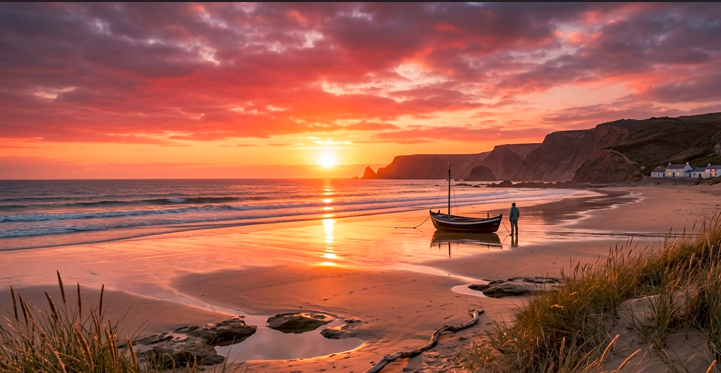
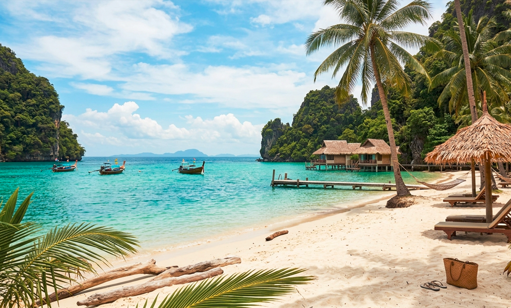
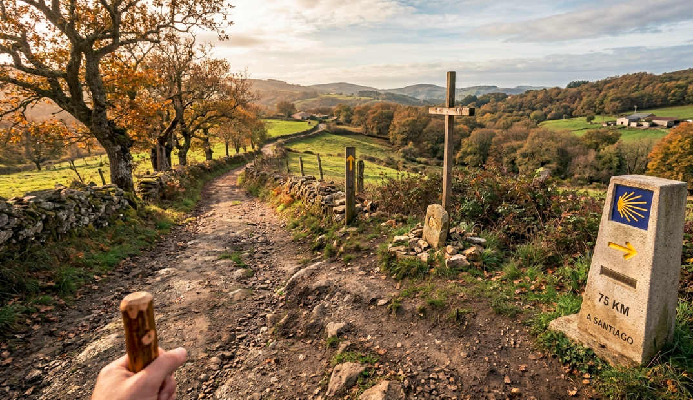
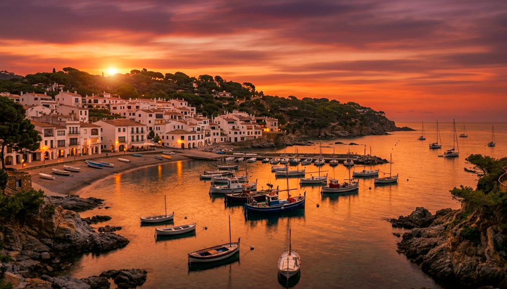
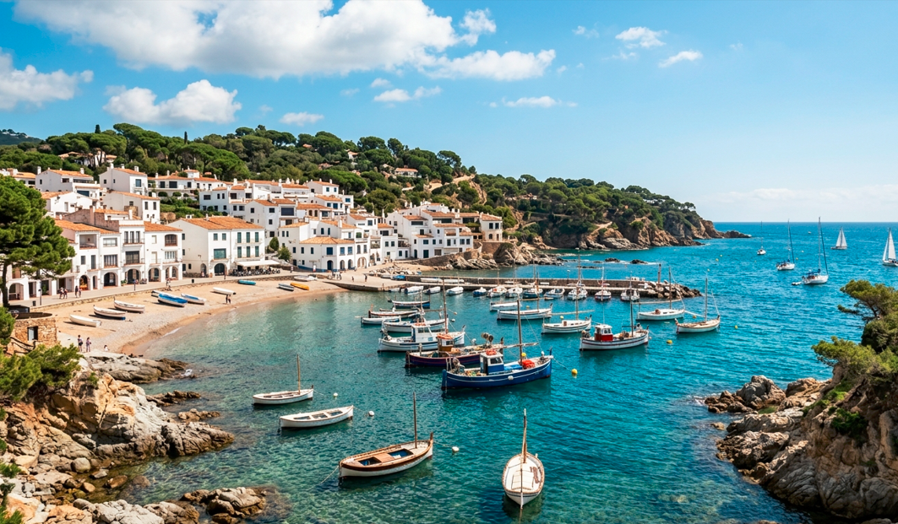

Aurora boreal iluminando un paisaje nevado de montañas y lago,creando una escena mágica de colores vibrantes y reflejos espectaculares

Sendero natural rodeado de un frondoso bosque,donde la luz se filtra entre los árboles creando un ambiente tranquilo y acogedor

Encantador paisaje donde un arroyo atraviesa un bosque frondoso, con una acogedora cabaña y montañas nevadas bajo el resplandor de una aurora boreal.

Espectacular playa al atardecer, con un barco sobre la arena húmeda y acantilados de fondo,bañados por los cálidos colores del cielo y el reflejo del mar.

Una espectacular bahía tropical de aguas tranquilas y cristalinas que degradan desde un verde esmeralda hasta un azul turquesa brillante. La playa, de arena blanca y fina, está flanqueada por frondosas palmeras que ofrecen una agradable sombra, donde descansan tumbonas y sombrillas de paja que invitan al relax absoluto.

La perfección de uno de los entornos más icónicos, rurales y naturales de las últimas etapas del Camino de Santiago, concretamente al adentrarse en la comunidad de Galicia: El entorno está dominado por el característico verde gallego.

Pueblo costero de estilo mediterráneo al atardecer. Sus casas blancas de estilo tradicional agrupadas en una ladera, con tejados rojizos y arcos en la planta baja que dan a un paseo marítimo. Una pequeña bahía resguardada con una playa de arena y zonas de rocas.

Este idílico destino se caracteriza por sus encantadoras casas encaladas con tejados de terracota que se agrupan en torno a pequeñas calas de arena dorada y aguas cristalinas de color turquesa.